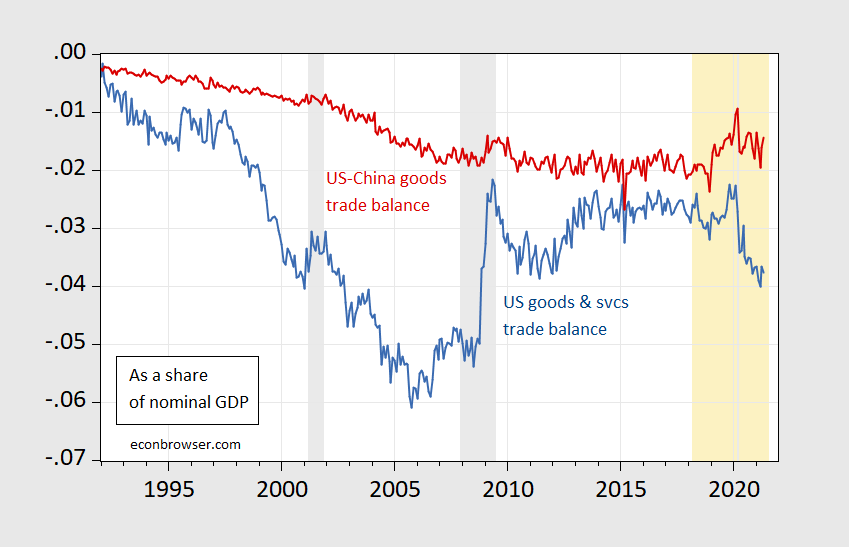
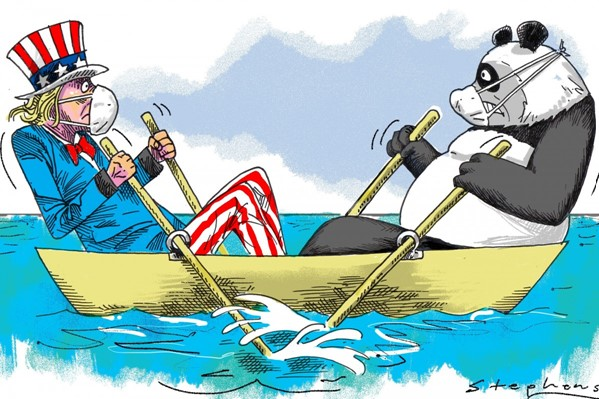

第一部分
陷阱
历史告诉我们，当一个正在崛起的国家遇到一个已经强大的国家时，结果往往是冲突。
古代的雅典和斯巴达。
一个在上升，一个在防守。
今天，很多人开始思考：
美国和中国会不会进入类似的局面？
修昔底德陷阱
哈佛大学经济学教授格雷厄姆·艾利森把这种情况称为“修昔底德陷阱”，
也就是当一个新兴大国挑战一个既有大国时，往往会产生巨大的紧张关系。
舟
历史让我们有理由担心。
但是，历史并不一定决定未来。
中美关系的未来，还没有被写下。
第二部分
矛盾
今天，中美关系在很大程度上由竞争来定义。
贸易保护。
科技竞争。
战略上的不信任。
在两国社会中，越来越多的声音把对方看成一种威胁，而不仅仅是竞争对手。
这种情况让不信任感不断加深，
不仅在政府之间，也在普通民众之间。
但是，在表面之下，还有另一种现实。
虽然关系日益紧张，中美之间依然存在很深的联系。
供应链仍然跨越两国。
资金仍然在两国之间流动。
创新的发展也依赖人才、知识和基础设施的共享。
麻省理工学院经济学教授黄亚生认为，这种关系远比简单的竞争更加复杂。
你中有我，我中有你。
吴越同舟。
两个对手，却在同一条船上。
但如果真是这样，
如果两国联系如此紧密，
为什么我们却感觉它们在渐渐远离？
这种相互依存关系是不是正在减弱？
“脱钩”是不是已经在发生？
如果是这样，这意味着什么？
第三部分
体系的压力
传统上，我们认为政府会处理国家之间的关系。
但政府更多关注的是安全、战略和政治压力。
企业则不同。
它们关注的是风险、机会，以及长期发展。
而现在，这两个世界正在慢慢分离。
经济机会
政治压力
企业正在风险、机会与地缘政治压力之间移动。
梅格·里思迈尔等学者指出，政治紧张正在改变企业跨国运作的方式。
公司面对越来越多的不确定性。
更复杂的政策环境。
以及更高的地缘政治风险。
但与此同时，它们仍然希望发展、合作和创新。
问题在于：
目前没有一个稳定、可信的平台，
让不同国家的企业、投资者和研究者可以公开交流这些问题。
没有一个共同的空间
没有一个共同的空间，
让大家可以更好地理解风险、机会和彼此的期待。
我们原本依赖的体系，正在承受越来越大的压力。
第四部分
质疑
即使我们尝试建立新的平台，也必须面对一些重要的质疑。
我们是不是高估了企业在国家竞争中的作用？
在历史上，经济上的相互依存，真的能防止冲突吗？
还是有时候也会失败？
如果结构性的力量如此强大，对话真的能改变结果吗？
但仔细看，图像并没有好多少。
表面上，数据似乎支持悲观者的判断。
中美贸易占全球贸易的份额持续下滑，
至2025年前三季度，已降至全球贸易总量的约2%。
跨境投资的规模更小。
两国关系的紧张程度，也已达到数十年来的最高点。
约2%
至2025年前三季度，中美贸易占全球贸易总量的比例。
用于呈现原脚本中的核心数据点。
数十年
两国关系的紧张程度，已达到数十年来的高点。
用于突出“体系压力”的长期背景。
细看，情况没有好多少。
一项2025年的研究发现，双边贸易的下降，并不能真正反映两国经济联系的全貌。
很多商品如今通过墨西哥、越南、韩国等第三国中转。
换句话说，两国都在努力减少直接依赖——
而且在很大程度上，它们成功了。
脱钩没有消失。它只是被掩盖了。
那么，企业是怎么看的？
根据美中贸易全国委员会2025年的调查，82%的美国企业在2024年仍然盈利。
但对未来持乐观态度的企业只有不到一半
82%
美国企业在2024年仍然盈利。
美中贸易全国委员会2025年调查。
不到一半
对未来持乐观态度的企业比例。
美中贸易全国委员会2025年调查。
利润还在。信心已经动摇。
而信心，往往比利润更早反映未来。
在中国的背景下，这些问题可能更加复杂。
企业到底有多大的独立性？
它们有多少空间可以与外国企业进行开放的交流？
参与这样的对话，会不会反而带来政治风险？
也有一些关键问题。
在某些行业中，政治逻辑是不是已经超过了经济逻辑？
如果企业已经在自己调整策略，那它们还需要一个共同的平台吗？
而在科技领域——半导体、人工智能、先进制造——
脱钩已经在发生，而且很可能无法逆转。
这是因为两国政府都把技术能力和国家安全联系在了一起。
在这些领域，竞争确实更接近零和。
对于企业来说，问题更加现实。
参与这个平台，能带来什么实际价值？
会不会带来名誉或政治风险？
在最坏的情况下，这些关系真的会改变企业的决策吗？
这些都不是理论问题。
而是真实存在的限制。
任何有效的方案，都必须认真面对这些问题。
第五部分
提案
如果政府有其限制，
市场本身也不够，
那么，我们缺少的是什么？
如果商界可以在稳定中美关系中发挥更大的作用，会怎么样？
不是取代政府。
而是作为一种补充。
我们的想法是：
建立一个面向企业、投资者和学术机构的对话平台。
重点不是意识形态，
而是实际的合作与协调。
这个平台有四个目标。
一
找到仍然可以合作的领域
比如绿色能源、医疗技术和供应链韧性。同时，也要明确哪些领域是“红线”，让企业可以更清楚地判断风险。
二
帮助企业更好地理解彼此
帮助企业更好地理解彼此的制度、政策和商业文化。很多跨国合作的问题，不是因为恶意，而是因为误解。
三
通过媒体改变公众的看法
通过短视频和故事，展示中美企业的相同点和不同点。减少刻板印象，建立更全面的理解。
四
建立长期的对话机制
不是一次性的会议，而是持续的交流过程。让关系慢慢建立，让信任逐渐发展。
减少这种信息差，可以帮助企业做出更好的决策。

实践路径
先通过短视频介绍真实的商业情况。
然后举办小规模的对话，让企业家、投资者和学者深入交流。
接着建立工作小组，讨论具体问题。
最后，通过与大学合作，进行更系统的研究。
第六部分
现实考量
当然，这种方法也有很多局限。
中美之间的战略竞争不会消失。
政府政策，比如出口管制或投资限制，可能会影响合作。
媒体环境和公众看法，也可能继续加深不信任。
企业本身也可能不愿意参与。
如果没有明确的好处，这种参与可能被认为没有必要，甚至有风险。
同时，我们也要承认：
类似的对话平台已经存在。
商业论坛、学术交流、行业合作，一直都在进行。
这个提案并不能取代它们。
也不一定能从根本上改变整个国际环境。
但也许，这并不是最重要的。
第七部分
结尾

问题不在于中美会不会竞争。
它们一定会竞争。
真正的问题是：竞争是不是一定会变成冲突？
还是说，我们可以通过新的对话方式，
在竞争中寻找合作的空间？
如果两国真的在同一条船上，
那么失败不会是各自的。
而是共同的。
真正的挑战，不只是竞争。
而是学会在同一条船上，一起前进。